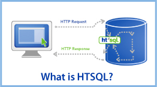
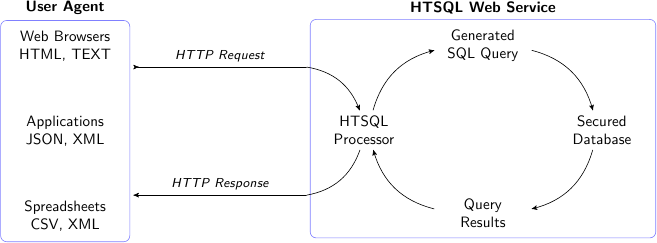
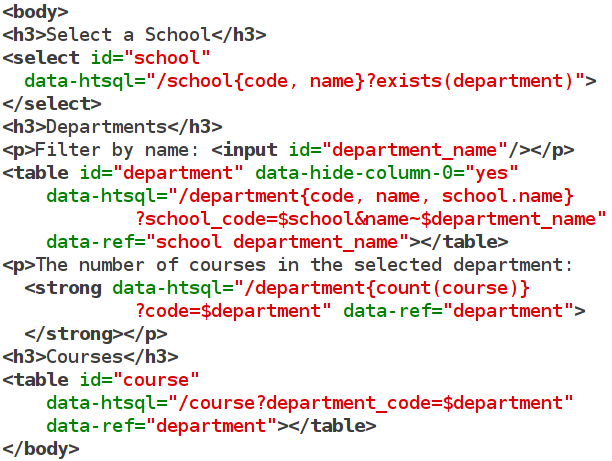
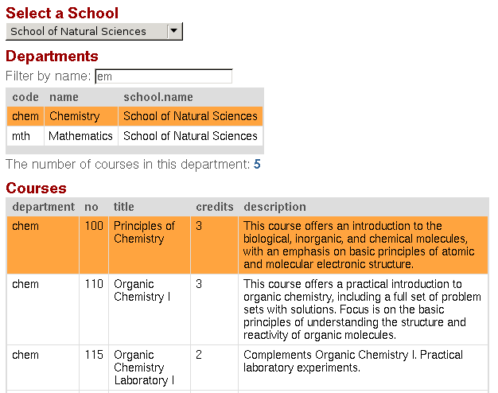
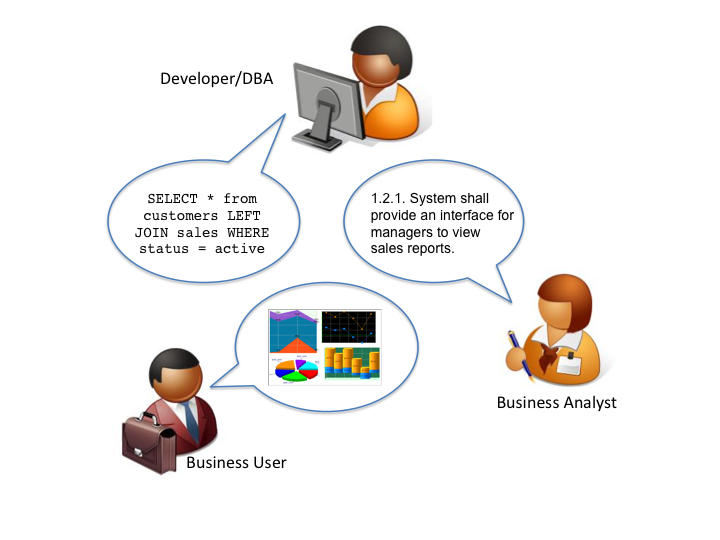
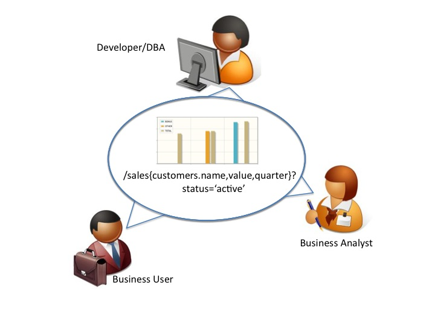
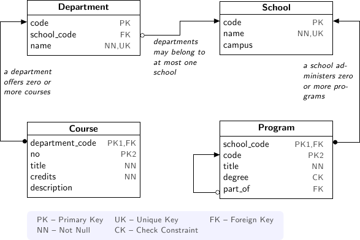
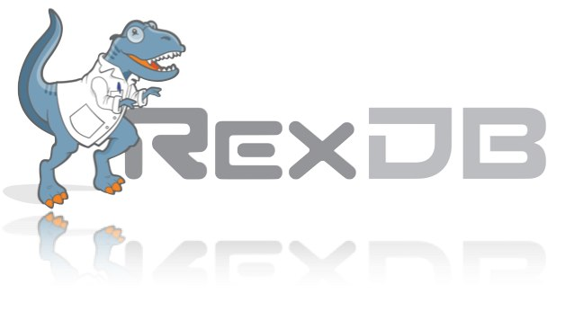
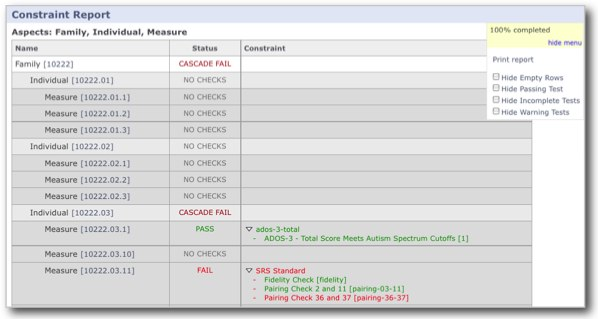
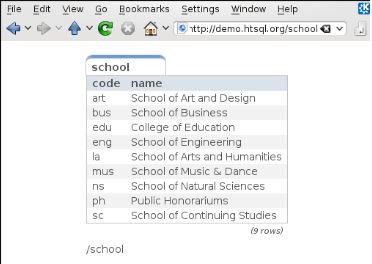

HTSQL -- A Query Language for the Accidental Programmer
HTSQL is a high-level navigational query language and analytical toolkit for relational databases. It is written by Kirill Simonov and Clark Evans in the Python language. HTSQL works with SQLite, PostgreSQL, MySQL, Oracle, and Microsoft SQL Server. HTSQL was created to support data analysts.
| Presenter: | Clark C. Evans, Prometheus Research, LLC |
|---|---|
| Date: | July 31, 2011 |
| Location: | PyOhio US 2011, Columbus, OH |
What is HTSQL?
- a web gateway for delational databases
- a navigational query language
- a complement to ORMs for reporting
- a way to describe and socially share data-sets
- a data access tool for accidental progammers
HTSQL is a query language for answering business inquiries, quickly & correctly, the first time through.
More Technically
Interactive Dashboard in Minutes
 Dashboard: Screenshot
Dashboard: Source Code
Why HTSQL?
We wrote HTSQL to enable Data Analysts to self-serve both simple and complex data questions without having to spend time in a confessional booth for SQL mishaps.
Technically, something like an ORM, but sharable via the web and focused on complex reporting needs rather than CRUD operations.
Socially, a mechanism where business analysts could give working queries to the development staff, rather than the other way around.
In Need of a Shared Language
- data analyst vs programmer
- different reference documents
- different language used
- confusion on data meaning
Collaborative Work Groups
- shared language among team members
- queries are emailed & tweaked
- test cases include live queries
- queries are concrete evidence
Relational Algebra is a Poor Fit
poor choice for elementary operations
difficult encoding of business inquiries
simple cases pay price of extreme flexibility
- easy to write incorrect
queries & not know it
What is Navigational Model?
Let's use entity relationships as navigation, and build query language around this principle.
- recurrent idea from CODASYL, OODBMS, to ORMs
- intuitive mapping from business inquiries
- automate tedious constructs (joins, casts)
- keep collection based processing
- keep predicate logic & aggregations
- keep projections, but as separate operator
Theory follows practice.
Example University Schema
SQL conflates Rows & Columns
- "Please list departments; for each department,
- show the corresponding school's campus."
SELECT d.code, d.name, s.campus
FROM ad.department AS d
LEFT JOIN ad.school AS s
ON (d.school_code = s.code);
The business inquiry asks for a specific set of rows, and then correlated columns. The SQL encoding returns a subset of a cross product, making it difficult to ensure what each row represents. The FROM clause doesn't just pick rows, it also plays and an auxiliary role in choosing columns.
Keep Row Definition Separate
- "Please list departments; for each department,
- the show the corresponding school's campus."
/department{code, name, school.campus}
The navigational translation separates the row definition from the column selection. The linking is implicit, and correct. The encoded query can be read aloud as a verbal inquiry.
SQL Conflates Filters & Links
- "For each department, return the department's
- name and number of courses having more than 3 credit hours."
SELECT d.name, COUNT(SELECT TRUE FROM ad.course AS c
WHERE c.department_code = d.code
AND c.credits > 3 )
FROM ad.department AS d;
For the SQL encoding of this inquiry we use a subquery to avoid row and column conflation. However, WHERE clause in the subquery conflates logic filter with the glue linking department and course.
Optimized SQL is Less Clear
- "For each department, return the department's
- name and number of courses having more than 3 credit hours."
SELECT d.name, count(c)
FROM ad.department AS d
LEFT JOIN ad.course AS c
ON (c.department_code = d.code
AND c.credits > 3)
GROUP BY d.name;
To optimize, the subquery is replaced by a GROUP BY projection. This gives us both row/column and link/filter conflation, obfuscating the business inquiry.
Navigational Model Doesn't Conflate
- "For each department, return the department's
- name and number of courses having more than 3 credit hours."
/department{name, count(course?credits>3)}
The navigational translation keeps the business logic separate from the link and the row definition separate from output columns. The encoded query corresponds to the original inquiry.
Conflating Projection & Aggregation
"How many departments by campus?"
SELECT s.campus, COUNT(d) FROM ad.school AS s LEFT JOIN ad.department AS d ON (s.code = d.school_code) WHERE s.campus IS NOT NULL GROUP by s.campus;
In the schema there isn't a campus table, you have to take distinct values from the school table. In this SQL query its not clear if the GROUP BY is used only to produce an aggregate, you have to examine primary key columns to know for sure.
Keep Projection Separate
"How many departments by campus?"
/(school^campus) {campus, count(school.department)}
In a navigational approach, you first construct the projection explicitly (using ^ operator). Then, you select from it. In this way the aggregation is indicated separately as part of the column selector rather than being confused with the row definition.
For SQL, Complexity is Painful
- "For each school with a degree program, return
- the school's name, and the average number of high-credit (>3) courses its departments have."
SELECT s.name, o.avg_over_3 FROM ad.school AS s
JOIN ad.program AS p ON (p.school_code = s.code)
LEFT JOIN (
SELECT d.school_code, AVG(COALESCE(i.over_3,0)) AS avg_over_3
FROM ad.department d
LEFT JOIN (
SELECT c.department_code, COUNT(c) AS over_3
FROM ad.course AS c WHERE c.credits > 3
GROUP BY c.department_code
) AS i ON (i.department_code = d.code)
GROUP BY d.school_code
) AS o ON (o.school_code = s.code)
GROUP BY s.name, o.avg_over_3;
Navigation to the Rescue
- "For each school with a degree program, return
- the school's name, and the average number of high-credit (>3) courses its departments have."
/(school?exists(program))
{name, avg(department.count(course?credits>3))}
Case Study: RexDB Constraints

- RexDB is data management platform to help medical researchers collect, organize, and analyze data sets.
- Core hierarchy is family, individual and measure plus dozens of support tables.
- One critical task is reporting on a subject's progress though phases of a study and data quality.
- We use constraints to check for inconsistencies that may indicate a data quality problem to be investigated.
Case Study: RexDB Constraints
- many tabular queries for each report
- entities are rows, checks are columns
- constraints are TRUE/FALSE/NULL (missing data)
- arbitrary subset of entities may be checked
- individual constraints can be very complex
Case Study: RexDB Constraints
Since rows & columns are clearly isolated, queries can be composed dynamically. The general template is:
/individual{id, check_1, check_2}?filter
For example, to return males participating in the 'aie' study, executing two completely orthogonal checks, we write:
/individual
.define(srs_13_pair := !exists(srs ? q3>24 | q1>7),
adi_sanity := ... )
{id, adi_sanity, srs_13_pair}
? sex='m'&exists(participation.study = 'aie')
How do you use it?
There are several ways you can use HTSQL.
- via htsql-ctl command line interpreter
- as a Python library /w SQLite in stand-alone programs
- as a WSGI service, integrated /w Django for web apps
- as a web service /w Ruby on Rails, or anything else
Via Command Line
HTSQL can be used via a command-line interpreter
$ htsql-ctl shell pgsql:htsql_regress
Interactive HTSQL Shell
Type 'help' for more information, 'exit' to quit the shell.
htsql_regress$ /count(student)
| count(student) |
-+----------------+-
| 456 |
(1 row)
Direct use in Python
HTSQL can be used either as a WSGI component, or directly as a data query tool within Python.
>>> from htsql import HTSQL
>>> from htsql.request import produce
>>> htsql = HTSQL('pgsql:htsql_regress')
>>> with htsql:
... for row in produce('/school'):
... print row
...
As a Web Service
HTSQL can be included as part of your web service infrastructure: authenticated, cached, proxied, or how ever you wish to have it integrated.
Development Status
HTSQL is quite usable currently, but it may have gaps for a given application. Particular items we'll be addressing in coming months are:
- a mechanism to override catalog configuration
- a way to add custom commands & formatters
- a way to list tables, links, and columns
- hierarchical queries & streaming result sets
- support for record-based CRUD operations
How do I get it?
Open Community
- source code is up on bitbucket
- free of charge for PostgreSQL, MySQL, etc.
- no restrictions on commercial applications
- we are at #htsql on irc.freenode.net
Dual-License & Support
- license for use /w commercial database systems
- we sell support packages and consulting
Q&A
Please visit our community site, http://htsql.org, our commercial site http://htsql.com, we are best found at #htsql on freenode. The source code is freely available at http://bitbucket.org/prometheus/htsql
Generous support for HTSQL was provided by Prometheus Research, LLC and The Simons Foundation. This material is also based upon work supported by the National Science Foundation under Grant #0944460.
We are hiring Javascript & Python Developers! See http://www.prometheusresearch.com/about_pr/careers